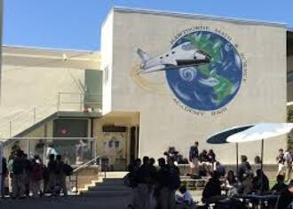
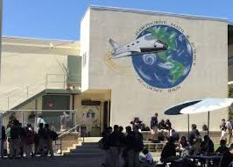
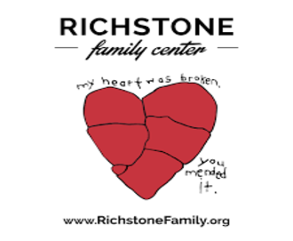
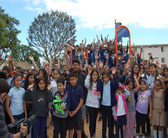
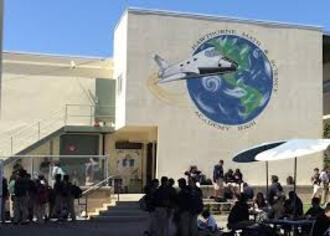
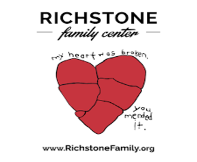
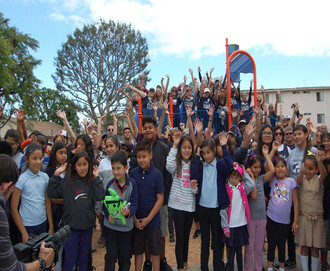

Paulina Herrera
Paulina Herrera is a current second year english major at the University of California Riverside. She is passionate when it comes to academia and especially in the dissemination of knowledge. Paulina hopes to pursue higher education and later on obtain a job within the university field as a professor. Currently, she offers her services as a writing tutor for fellow students as well as highschool students, and is also a freelance editor. Paulina began her journey through volunteer work at her local elementary schools. During highschool she volunteered at the A.L.L. Program, for two years, in which she created lesson plans and helped children with homework. She was also in charge of conversing with parents and communicating the child's progress in their schoolwork and grades. This helped her realize the importance and impact education has on people's day to day lives. Her goal is to enable others to learn more and seek out academic opportunities, she believes this can be done by making learning interesting. Her goal is to make education accessible and enjoyable for future generations.
During the same time Paulina was volunteering she also began a job as a tutor and translator, for a child with language disabilities at Richstone. She learned to be patient and the protocol for how one should go about teaching children with disabilities. She also learned the importance of taking into consideration the client and how they feel as well. Paulina was able to learn how to adapt her teaching style depending on the person. She also was able to use her ability to speak spanish as a bridge between her employer and the parents of the child. Her journey as a language tutor and translator lasted for three years and she has continued to maintain a good relationship with her employer and her client. After entering university Paulina continued her journey in education by volunteering at her alma mater for the AP English Literature class. There she honed her editing and critical skills when it came to writing while also helping others.
If you are interested in the services that Paulina provides as a writing tutor and a freelance editor, for both college, highschool students, and children feel free to contact her through her email which is pherr011@ucr.edu or her phone number 213- 882-3151. The first meeting or phone call will be a consultation, it is free of cost, as it is important to identify what type of help is needed. Similarly, the first tutoring session is half-priced in order for the client to see if it is a good fit for them.For costs it is by hourly and depending on the level of difficulty ranges in prices. Most often she will work around your schedule to make the process as easy and simple for the client as possible. However, in general Paulina’s services are available on the weekend afternoons( unless it is a holiday) and Monday, Wednesday and Thursdays between 2pm and 6pm(unless it is a holiday).
Experience
Volunteer
• Created lesson plans
• Helped with Homework
• Experience with talking and communication with parents
Volunteer
• Profreeded essays and written pieces
• Taught basic writing skills and pratcices
Language Tutor and Translator
• Taught english and pronuncation
• Reviewed progress and informed employer
• Created assignments and practices
• Acted as a translator between employer and parents
Education
UC Riverside
Portfolio
.jpg) ">
">
">
">
">"> ">